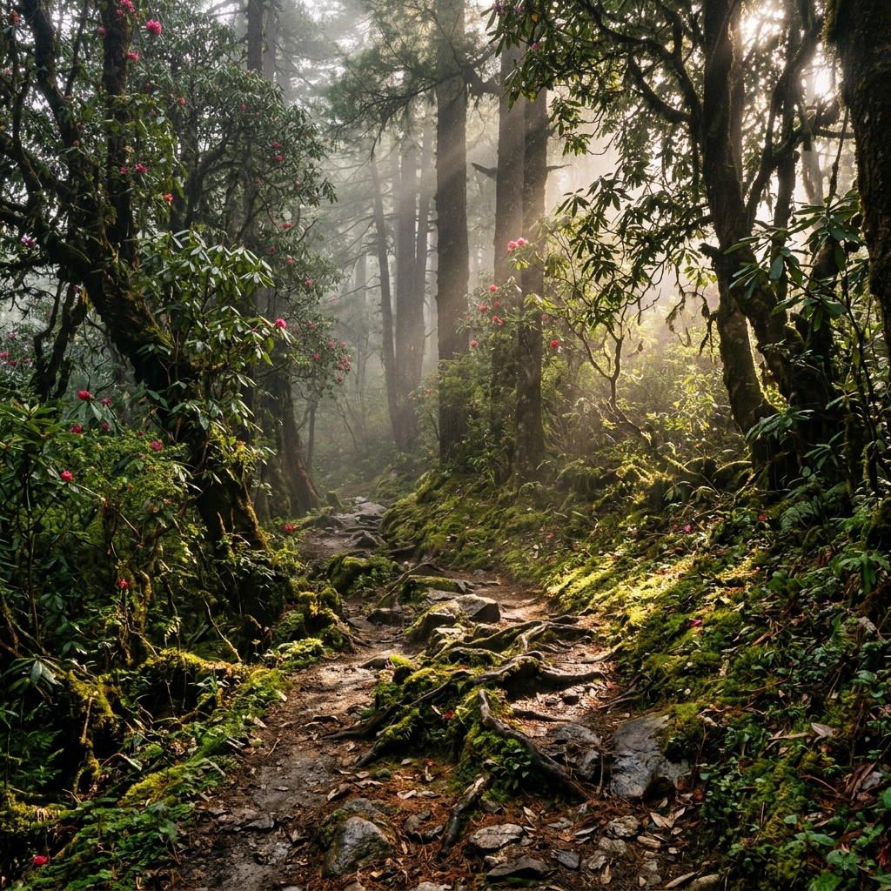
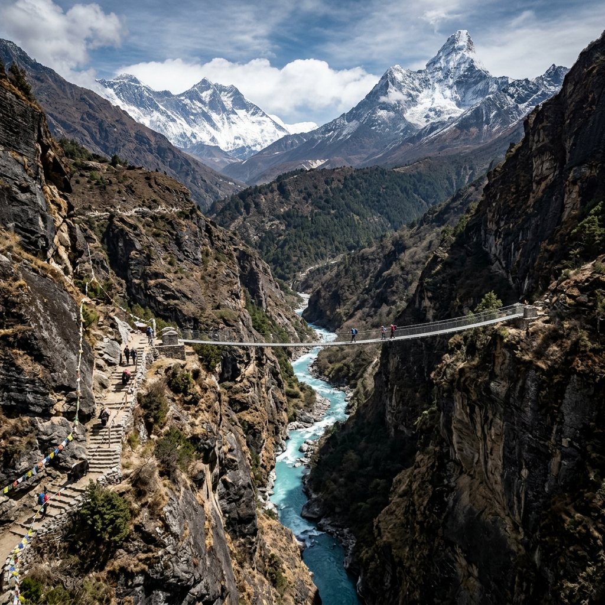
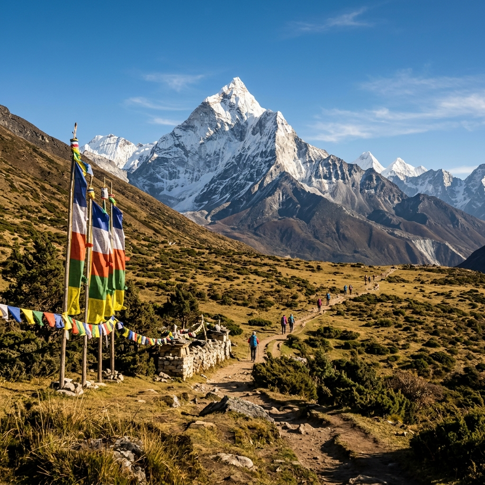
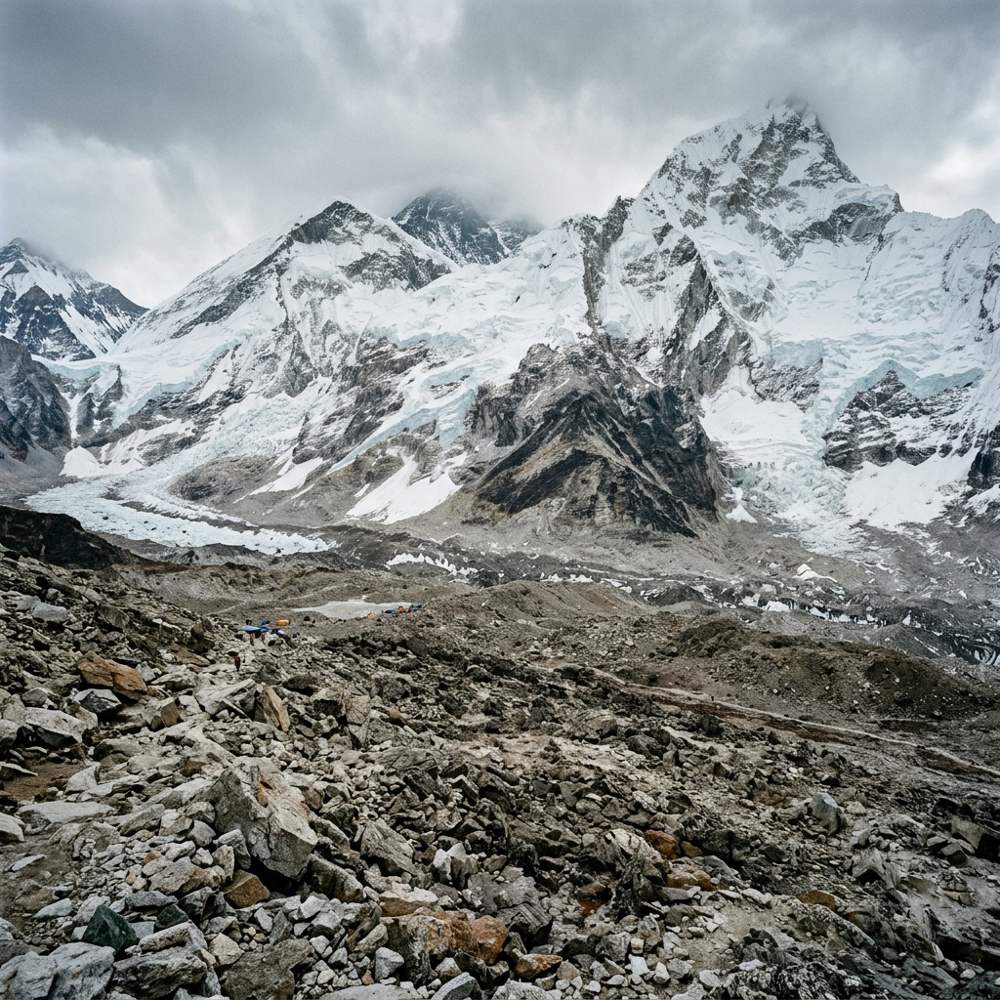
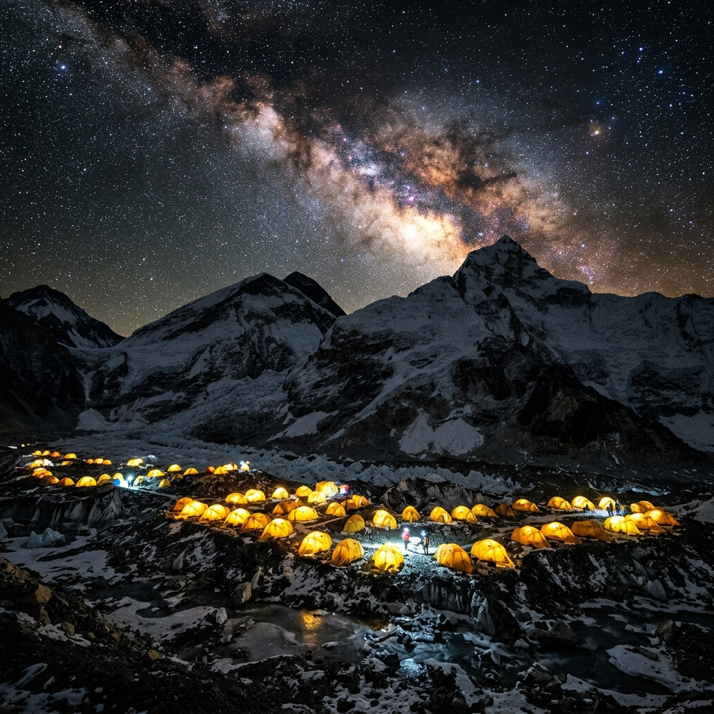
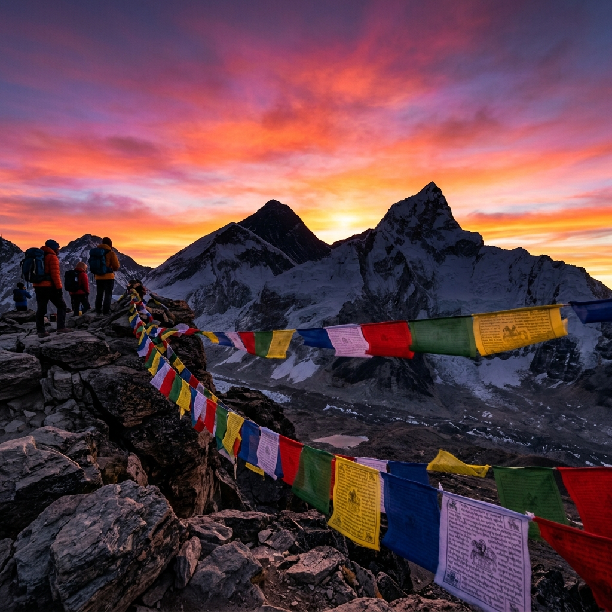

Stage 01 · Khumbu Valley · Phakding
The Trailhead
Where the forest swallows the path.
Rhododendron blooms and pine canopy close above you. The Dudh Kosi river rushes somewhere below — unseen but always heard.

Stage 02 · Dudh Kosi Canyon · Namche
The Canyon Opens
Snow peaks emerge above the gorge.
Thamserku and Kangtega appear for the first time — white summits floating above grey canyon walls. The river is jade-green below.

Stage 03 · Tengboche · Ama Dablam
The Spire Appears
Ama Dablam — the mother's jewel box.
The peak rises like a cathedral. Its hanging glacier glitters midway up the south face. Prayer flags snap in the thin, cold wind at your feet.

Stage 04 · Lobuche · Khumbu Glacier
The Great Wall
Nuptse fills the sky from edge to edge.
The Khumbu glacier moraine stretches in every direction — a rubble field of stones carried down from the highest peaks on earth.

Stage 05 · Everest Base Camp · Night
Under the Stars
5,364 metres. The mountain breathes around you.
Tent walls glow orange against the glacier. The Khumbu Icefall crackles above. The Milky Way is close enough to touch.

Stage 06 · Kala Patthar · Khumbu
The Summit
Sunrise at 5,644 metres. Everest ignites.
Gold floods the south face of Everest. Nuptse's ridge glows amber. The prayer flags tear and snap in the wind. Below, everything is cloud.